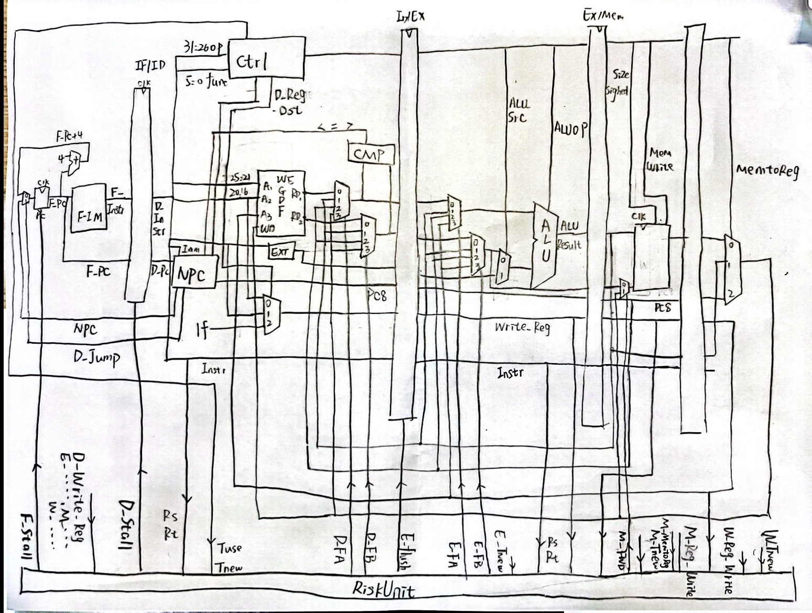
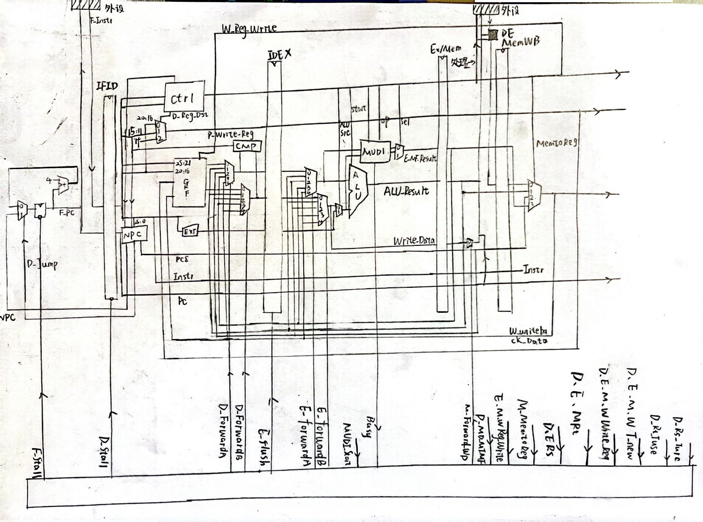

BUAA_CO_P5和P6CPU设计文稿
P5——CPU设计文稿
1.总示意图

2.命名规范
1.模块以及接口加上各级前缀
2.属于某模块在级后面在加模块名
3.模块定义
1）Datapath
1、E_ALU模块
同指导书，改为case来操作
| 信号名 | 方向 | 描述 | |
|---|---|---|---|
| E_ALU_A [31 : 0] | I | 32位输入信号 | |
| E_ALU_B [31 : 0] | I | 32位输入信号 | |
| E_ALU_Shamt [4 : 0] | I | 五位输入信号 | |
| E_ALUop [2 : 0] | I | 操作选择控制 E_ALUop == 3’b000 A +B； E_ALUop == 3’b001 A - B; E_ALUop == 3’b010 A \ |
B; E_ALUop == 3’b011 A & B; E_ALUop == 3’b100 B左移Shamt位 E_ALUop == 3’b101 B加载到高位 |
| E_ALU_Result [31 : 0] | O | 32位输出信号 |
2、D_CMP模块
从原来的ALU模块分离出来到译码阶段
| 信号名 | 方向 | 描述 |
|---|---|---|
| D_CMP_A [31: 0] | I | 32位输入 |
| D_CMP_B [31: 0] | I | 32位输入 |
| D_CMP_Equal | O | 相等 ？ 1 ：0 |
| D_CMP_Less | O | 小于 ？ 1 ：0 |
| D_CMP_Greater | O | 大于 ？ 1 ： 0 |
3、E_EXT模块
| 信号名 | 方向 | 描述 |
|---|---|---|
| D_EXT_Imm [15: 0 ] | I | 16位待扩展立即数 |
| D_EXTop [1:0] | I | 扩展选择 D_EXTop == 2’b00 符号扩展 D_EXTop == 2’b01 无符号扩展 |
| D_EXT_Result [31:0] | O | 扩展结果 |
4、F_PC模块
| 信号名 | 方向 | 描述 |
|---|---|---|
| F_PC_clk | I | 时钟信号 |
| F_PC_reset | I | 复位信号 |
| F_PC_en | I | 使能信号 |
| F_PC_ NPC [31:0] | I | 32位输入信号 |
| F_PC_PC [31:0] | O | 输出信号 |
5、F_IM模块
| 信号名 | 方向 | 描述 |
|---|---|---|
| F_IM_PC [31:0] | I | 32位取址信号 |
| F_IM_Instr [31 :0] | O | 32位结果 |
6、D_NPC模块
| 信号名 | 方向 | 描述 |
|---|---|---|
| D_NPC_PC[31:0] | I | 32位PC信号 |
| D_NPC_Imm[26:0] | I | 26位立即数地址 |
| D_NPC_RA[31:0] | I | $RA |
| D_NPC_Branch[2 :0] | I | 对应不同Branch 3’b000表示不是Branch 若为3’b001对应beq |
| D_NPC_J | I | 对应J跳转指令 |
| D_NPC_JR | I | 对应Jr跳转指令 |
| D_NPC_Equal | I | 比较结果 |
| D_NPC_Great | I | 比较结果 |
| D_NPC_Less | I | 比较结果 |
| D_NPC_NPC[31:0] | O | |
| D_Jump | O | 判断地址是否跳转 |
7、D_GRF模块
| 信号名 | 方向 | 描述 |
|---|---|---|
| D_GRF_A1 [4:0] | I | 5位地址输入信号，输入rs指定的寄存器并将其结果读出到RD1 |
| D_GRF_A2 [4:0] | I | 5位地址输入信号，输入rt指定的寄存器并将其结果读出到RD2 |
| D_GRF_A3 [4:0] | I | 5位地址输入信号，输入rd指定的寄存器并将WD写入 |
| D_GRF_WD [31:0] | I | 32位输入信号 |
| D_GRF_clk | I | 时钟信号 |
| D_GRF_reset | I | 异步复位信号 |
| D_GRF_WE | I | 使能信号 |
| D_GRF_RD1 [31:0] | O | 输出A1指定寄存器的32位数据 |
| D_GRF_RD2 [31:0] | O | 输出A2指定寄存器的32位数据 |
8、M_DM模块
| 信号名 | 方向 | 描述 |
|---|---|---|
| M_DM_clk | I | 时钟信号 |
| M_DM_reset | I | 复位信号 |
| M_Mem_Write | I | 写信号 |
| M_signed | I | 输出是否符号位扩展信号 |
| Size | I | 决定是字、半字、字节 |
| M_ALU_Result[31:0] | I | 储存地址 |
| M_WriteData[31:0] | I | 储存数据 |
| M_PC[31:0]] | I | PC |
| M_Read_Data | O | load结果 |
9、Controller
根据名称要求更改，采取重构
| 信号名 | 方向 |
|---|---|
| opcode[5:0] | I |
| funct[5:0] | I |
| D_EXTop [1:0] | O |
| D_NPC_Branch [2:0] | O |
| D_NPC_J | O |
| D_NPC_JR | O |
| E_Reg_Dst [1:0] | O |
| E_ALU_Src [1:0] | O |
| E_ALUop [2:0] | O |
| M_Mem_Write | O |
| M_DM_Size[1:0] | O |
| M_Signed | O |
| W_MemtoReg [1:0] | O |
| W_RegWrite | O |
| D_Rs_Tuse | O |
| D_Rt_Tuse | O |
| D_Tnew | O |
其真值表对应如下，同时改为case结构，代码长度显著增加，但便于debug
| 指令 | D_EXTop[1:0] | D_NPC_Branch[2:0] | D_NPC_J | D_NPC_JR | D_Reg_Dst[1:0] | E_ALU_Src[1:0] | E_ALUop[2:0] | M_Mem_Write | M_DM_Size[1:0] | M_signed | W_MemtoReg[1:0] | W_RegWrite |
|---|---|---|---|---|---|---|---|---|---|---|---|---|
| Add | 00 | 000 | 0 | 0 | 01 | 00 | 000 | 0 | 00 | 0 | 01 | 1 |
| Sub | 00 | 000 | 0 | 0 | 01 | 00 | 001 | 0 | 00 | 0 | 01 | 1 |
| Jr | 00 | 000 | 0 | 1 | 00 | 00 | 000 | 0 | 00 | 0 | 00 | 0 |
| Ori | 01 | 000 | 0 | 0 | 00 | 01 | 010 | 0 | 00 | 0 | 01 | 1 |
| Lw | 00 | 000 | 0 | 0 | 00 | 01 | 000 | 0 | 00 | 0 | 00 | 1 |
| Sw | 00 | 000 | 0 | 0 | 00 | 01 | 000 | 1 | 00 | 0 | 00 | 0 |
| Beq | 00 | 001 | 0 | 0 | 00 | 00 | 000 | 0 | 00 | 0 | 00 | 0 |
| Lui | 00 | 000 | 0 | 0 | 00 | 01 | 101 | 0 | 00 | 0 | 01 | 1 |
| J | 00 | 000 | 1 | 0 | 00 | 00 | 00 | 0 | 00 | 0 | 00 | 0 |
| Jal | 00 | 000 | 1 | 0 | 10 | 01 | 000 | 0 | 00 | 0 | 10 | 1 |
2）RiskUnit 冒险处理
D_Tuse与D_Tnew表格，每次走过一个寄存器，T_new都会减一
Tuse<Tnew 暂停
对不需要使用寄存器的Tuse置最大值。
注意：不转发0
| 指令 | D_Rs_Tuse | D_Rt_Tuse | D_Tnew |
|---|---|---|---|
| Add | 1 | 1 | 2 |
| Sub | 1 | 1 | 2 |
| Jr | 0 | M | 0 |
| Ori | 1 | M | 2 |
| Lw | 1 | M | 3 |
| Sw | 1 | 2 | 0 |
| Beq | 0 | 0 | 0 |
| Lui | M | M | 2 |
| J | M | M | 0 |
| Jal | M | M | 2 |
4.测试数据
1 | |
5.思考题
1.在D级就直接就直接计算出是否需要跳转，若需要发生跳转，由于NPC是组合逻辑，下一条指令的地址直接传出到PC模块，这样只会多读跳转指令下一条的指令，即使将分支判断提到 D 级，发生跳转的时候，F 级指令依然是需要作废的。但是我们如果约定 F 级指令不作废呢？也就是说，不论判断结果如何，我们都将执行分支或跳转指令的下一条指令。这也就是所谓的“延迟槽”。那么指令执行的效率就提高了。
2.Jal需要将jal下一条指令的位置写入$ra寄存器，由于延迟槽的地址是PC+4，所以实际应该写回PC +8了。
3.流水线中的各个阶段需要在特定的时钟周期内完成其任务。如果数据来自功能部件，可能会增加流水线的复杂性，导致更难以保持稳定的时序。通过限制数据转发只能来自寄存器，可以简化流水线的设计，提高稳定性。
4.当前 GPR 被写入的值会即时反馈到读取端上。具体的说，当读寄存器时的地址与同周期写寄存器的地址相同时，我们将读取的内容改为写寄存器的内容，而不是该地址可以索引到的寄存器文件中的值。这也就对应着图中的两个四选一多路选择器。利用冲突单元生成选择信号即可
1 | |
5.需求者：D级：CMP，E级：ALU
提供者：M级：ALU_Result,PC8
W级：因为已经被选择过，过Writeback_Data就已经可以满足需求
6.大致可将指令分为三类
1）计算指令，主要对ALU模块进行增加操作，如Add指令
2）跳转指令，可能需要调整ALU模块或者NPC，由于这里是流水线，ALU模块的输出不能直接和单周期一样课上直接连在NPC模块，可能需要考虑在增加D级就增加符合跳转的运算
3）访存指令，DM中已经支持字、半字、字节的存取，根据题意做ALU，NPC等对应的增添即可
7.采取分散式译码
译码结果较易观察，且不容易产生bug，不同指令之间完全分离，缺点就是代码冗长。
选做2，采取交叉式出现
P6——CPU
支持指令：add, sub, and, or, slt, sltu, lui addi, andi, ori lb, lh, lw, sb, sh, sw mult, multu, div, divu, mfhi, mflo, mthi, mtlo beq, bne, jal, jr
1.模块定义
增加E_MUDI乘除模块与M_DE模块，删除看F_IM与M_DM模块
1、M_BE
| 信号名 | 方向 | 描述 |
|---|---|---|
| M_BE_A[1:0] | I | 最低两位的地址 |
| M_BE_Din[31:0] | I | 输入的 32 位数据 |
| M_BE_Op[2:0] | I | 数据扩展控制码 000： 无扩展 001：无符号字节数据扩展 010：符号字节数据扩展 011：无符号半字数据扩展 100：符号半字数据扩展 |
| M_BE_Dout[31:0] | O | 扩展后的 32 位数据 |
2、E_MUDI
| 信号名 | 方向 | 描述 |
|---|---|---|
| E_MUDI_clk | I | 时钟信号 |
| E_MUDI_reset | I | 复位信号 |
| E_MUDI_A [31:0] | I | 运算数据A |
| E_MUDI_B [31:0] | I | 运算数据B |
| E_MUDI_Start | I | 开始计算信号 |
| E_MUDI_op [2:0] | I | 运算选择信号 |
| E_HI_Write | I | 高位写信号 |
| E_LO_Write | I | 地位写信号 |
| E_HI [31:0] | O | 高位寄存器输出结果 |
| E_LO[31:0] | O | 低位寄存器输出结果 |
| E_MUDI_Busy | O | 计算中信号 |
2.总示意图

3.思考题
1.乘除法运算效率远低于ALU内的各个计算，需要耗费大量时间，放在一起会大大拖慢效率，独立的HI、LO也是为了高效率，因为只有乘除法会用到高位寄存器，低位寄存器，与其他不一致，分开便于控制。
2.真实的流水线 CPU 使用乘法和除法指令来实现乘除法运算。在执行乘法和除法指令时，CPU会将操作数加载到寄存器中，然后通过一系列的算术逻辑单元(ALU)来进行乘法或除法计算。这些计算通常会在多个时钟周期内完成，因为乘法和除法是比较复杂的运算。乘法：乘法可以通过一系列的加法和移位来实现。处理器中的乘法单元通常包括：部分积生成器（Partial Product Generator）：将两个乘数的每一位相乘，生成部分积。部分积累加器（Partial Product Accumulator）： 将所有部分积相加，得到最终的乘积。这个过程可能需要多个时钟周期，因此在流水线中可能会有多个阶段用于处理不同的部分。除法：除法通常比乘法更为复杂，可能涉及到迭代的过程。处理器中的除法单元通常包括：部分商生成器（Partial Quotient Generator）： 生成每一位的部分商。部分商累加器（Partial Quotient Accumulator）： 将所有部分商相加，得到最终的商。这个过程同样可能需要多个时钟周期，并且可能需要进行多轮迭代来得到最终的结果。
在流水线中，这些乘法和除法的阶段可能被划分为多个子阶段，以便在每个时钟周期内执行一些部分操作。流水线的设计需要考虑到数据相关性、控制信号的传递以及流水线暂停和刷新等问题，以确保正确且高效地执行指令。
3.当且仅当Busy且指令为乘除有关的那八条指令时阻塞
1 | |
4.清晰性：每个字节的写分开，互不干扰，统一性：各个字节的控制信号仍然来自m_data_byteen[3:0]
5.不是，如果只实现按字使能，就不得不先读取值再进行更改，这样数据通路就延长了，导致效率下降。
6.对于选择信号以及条件尽可能实现宏定义来实现，避免出现6‘b100000这种无缘无故的常数，方便查找bug
7.连续的乘除有关的那八条指令，同3进行阻塞或者转发实现，测试数据
1 | |
8.多增加连续的乘除有关的那八条指令，其余同P5构造
{temp_hi, temp_lo} <= {hi, lo} + $signed($signed(64’d0) + $signed(rs) * $signed(rt));